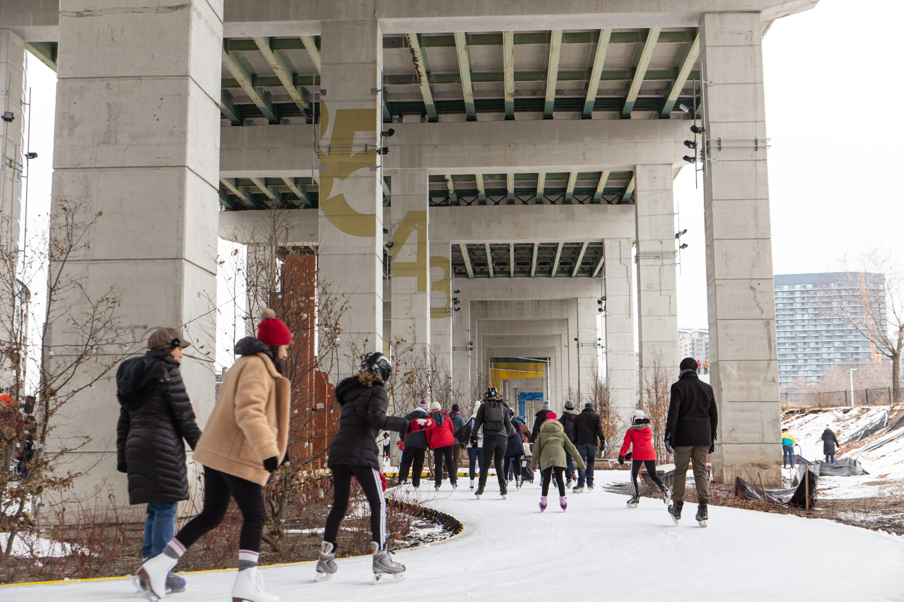

The Bentway Skate Trail

Address: 250 Fort York Blvd
Open: 5 PM – 9 PM (Weekdays) / 12 PM – 9 PM (Weekends)
Amenities: Skate rentals, food & drink vendors, washrooms
Special Events: DJ skate nights on Fridays
Glide beneath Toronto's Gardiner Expressway at The Bentway Skate Trail, a unique 220-metre figure-eight ice path. Known for its urban vibe and lively atmosphere, this trail offers a one-of-a-kind winter skating experience. Whether you're enjoying a leisurely skate or joining one of the themed DJ nights, The Bentway provides a fun and social outdoor setting.
Pro Tips:
- Weekends: Arrive early to avoid long rental lines.
- Hot Beverages: Grab a hot chocolate from the on-site vendor.
- Summer Use: Transforms into a roller trail in warmer months